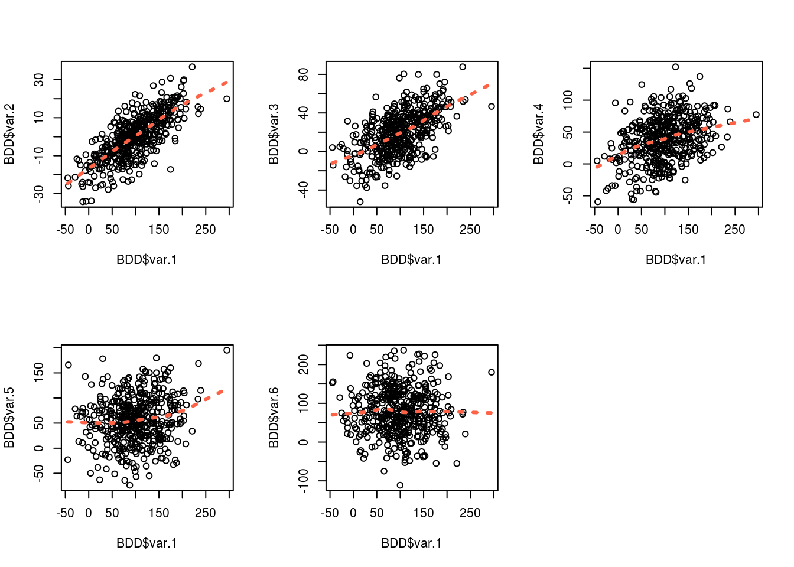
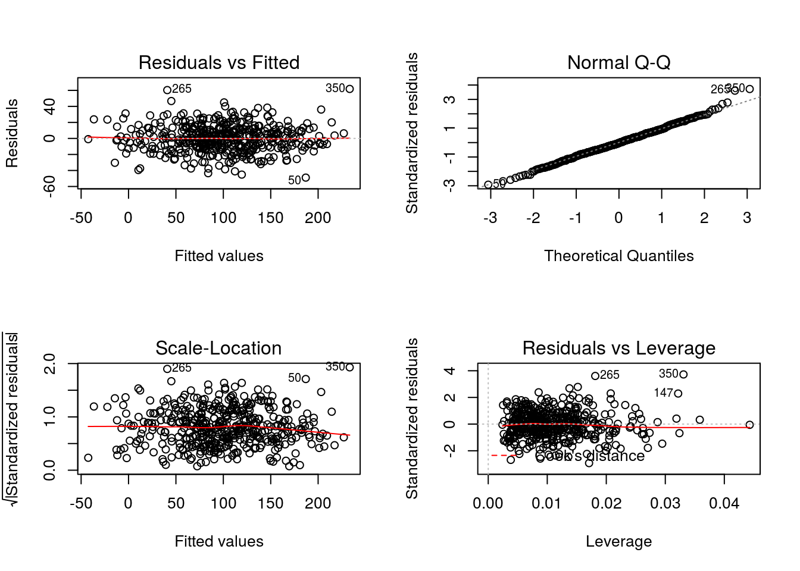

Dans cette section on s’interesse a la facon de specifier un modele lineaire dans R.
Un ensemble de vidéos expliquant simplement le concept des modeles lineaires peut etre trouve ICI.
On ne verra pas les etapes suivantes de validations et d’optimisation du modele. Des packages et fonctions interessantes pour cela peuvent etre trouvees ICI.
Creation d’une BDD
Pour voir les etapes necessaires a la creation d’un modele on va construire un jeu de donnee basique.
On pourra ainsi maitriser les parametres et definir les associations a trouver.
On definit BDD, une data frame de 450 observations de 6 variables continues normales.
La variable d’interet est “var.1”" que l’on cherche a expliquer par les 5 autres variables.
Par construction on connait la relation de var.1 avec les autres variables.
#Variables
var.2<- rnorm(450, 0, 12)
var.3<- rnorm(450, 20, 24)
var.4<- rnorm(450, 40, 36)
var.5<- rnorm(450, 60, 48)
var.6<- rnorm(450, 80, 60)
#Coefficients
A <- 3
B <- 1
C <- 0.5
D <- 0.2
E <- 0
#On construit la variable d'interet "var.1", qui est la combinaison des variables precedemment crees, selon des coefficients determines, et un bruit blanc
var.1 <- 48 + A*var.2 + B*var.3 + C*var.4 + D*var.5 + E*var.6 + rnorm(450, 0 , 17)
#On structure la BDD
BDD <- data.frame(var.1,var.2, var.3, var.4, var.5, var.6)
str(BDD)## 'data.frame': 450 obs. of 6 variables:
## $ var.1: num 163.6 100.6 62 140.2 15.2 ...
## $ var.2: num 15.59 -14.661 0.138 -14.152 -10.047 ...
## $ var.3: num 36.18 25.23 11.49 53.98 8.72 ...
## $ var.4: num 23.8 59.3 24.3 43.5 -15.3 ...
## $ var.5: num 144.93 79.93 7.82 127.91 44.34 ...
## $ var.6: num 76.5 51.8 116.5 53.2 19.3 ...Visualisation des associations brutes
On peut visualiser dans un premiers temps la relation de notre variable d’interet avec les autres variables.
On constate comme attendu que les relations semblent lineaires, et proches des coefficients specifies plus haut.

On specifie un 1er modele “M.Lineaire.1”, qui est le modele complet.
Il modeleise la relation entre ‘var.1’ et l’ensemble des autres variables.
La fonction summary() permet d’afficher les details de ce modele.
La sortie comporte plusieurs compartiments:
Call: rappel de la formule utilisee.
Residuals: propose une description de la distribution des residus, on s’y interessera plus tard pour examiner la concordance du modele avec les hypotheses du modele.
Coefficients: affiche le coefficient, l’ecart type, la valeur t et la p-value pour l’intercept et chaques coefficients testes dans le modelee.
Le dernier compartiment indique plusieurs indicateurs notamment le R² et le R² ajuste.
M.Lineaire.1 <- lm(formula = var.1 ~ var.2 + var.3 + var.4 + var.5 + var.6, data= BDD)
summary(M.Lineaire.1)##
## Call:
## lm(formula = var.1 ~ var.2 + var.3 + var.4 + var.5 + var.6, data = BDD)
##
## Residuals:
## Min 1Q Median 3Q Max
## -49.139 -10.706 -0.549 11.159 62.236
##
## Coefficients:
## Estimate Std. Error t value Pr(>|t|)
## (Intercept) 48.973066 1.949150 25.12 <2e-16 ***
## var.2 3.014095 0.068420 44.05 <2e-16 ***
## var.3 1.036454 0.035528 29.17 <2e-16 ***
## var.4 0.503681 0.022952 21.95 <2e-16 ***
## var.5 0.190081 0.016869 11.27 <2e-16 ***
## var.6 -0.004485 0.013188 -0.34 0.734
## ---
## Signif. codes: 0 '***' 0.001 '**' 0.01 '*' 0.05 '.' 0.1 ' ' 1
##
## Residual standard error: 16.89 on 444 degrees of freedom
## Multiple R-squared: 0.8987, Adjusted R-squared: 0.8976
## F-statistic: 788 on 5 and 444 DF, p-value: < 2.2e-16On peut comparer deux modeles a partir de la fonction anova(), a la condition qu’ils soient emboites.
On a cree le modele ‘M.lineaire.2’ qui comporte les meme variables que le modele precedent a l’exception de ‘var.2’, la variable la plus fortement associee a notre outcome.
La sortie affiche les modeles ainsi que la p-value associee a cette comparaison. On constatera qu’ils sont significativement differents.
On conserve le modele 1 qui comporte le plus d’information.
M.Lineaire.2 <- lm(formula = var.1 ~ var.3 + var.4 + var.5 + var.6, data= BDD)
anova(M.Lineaire.1, M.Lineaire.2)## Analysis of Variance Table
##
## Model 1: var.1 ~ var.2 + var.3 + var.4 + var.5 + var.6
## Model 2: var.1 ~ var.3 + var.4 + var.5 + var.6
## Res.Df RSS Df Sum of Sq F Pr(>F)
## 1 444 126666
## 2 445 680293 -1 -553627 1940.6 < 2.2e-16 ***
## ---
## Signif. codes: 0 '***' 0.001 '**' 0.01 '*' 0.05 '.' 0.1 ' ' 1Pour automatiser le processus precedent on peut s’aider de la fonction step(). Elle permet d’effectuer une selection purement statistique des variables a partir de la comparaison automatisee des modeles emboites.
La fonction part d’un modele initial a tester, ajoute/retire des variables et compare les modeles ainsi cree selon un critere que l’on definit. C’est un processus iteratif qui continue jusqu’a otpimiser notre critere de selection.
On doit specifier plusieurs choses:
(1) le modele de depart
(2) dans quelle direction la fonction doit elle chercher (forward: ajoute des variables ; backward: retire des variables ; both)
(3) le domaine de recherche : c-a-d définir les modèles qui encadrent (le plus riche, le plus pauvre en information) l’ensemble des modèles que l’on souhaite explorer
(4) le critere de selection (generalement AIC ou BIC).
On va specifier le modele null et le modele full qui sont respectivement le modele le plus pauvre en information que l’on souhaite tester et le modele le plus riche en information que l’on souhaite tester.
Par defaut R ira du modele vide jusqu’au modele complet.
Plusieurs options sont disponibles concernant la direction, on consultera la page d’aide pour plus de details.
La sortie de la fonction step est interessante a analyser.
Les deux premiers lignes indique la valeur du critere ainsi que la formule pour le modele initial.
Le premier tableau indique les tests effectues.
Le critere (ici le BIC malgre ce qu’affiche le tableau) est evalue dans plusieurs cas de figure:
- en ajoutant var.2
- en ajoutant var.3
- en retirant var.6
- en conservant le modele tel quel
- en retirant var.5
-en retirant var.4
Il en conclut que ce qui minimise le BIC est d’ajouter var.2.
Il ajoute var.2 a notre modele initial, et recommence la procedure.
Il continue ainsi jusqu’a obtenir un modele pour lequel ajouter/retirer une variable penalise notre critere.
Il conserve ce modele en dernieres lignes et nous affiche ses coefficients.
M.Lineaire.0 <- lm(formula = var.1 ~ var.4 + var.5 + var.6, data= BDD)
null <-lm(formula = var.1 ~ 1, data= BDD)
full<- lm(formula = var.1 ~ var.2 + var.3 + var.4 + var.5 + var.6, data= BDD)
step(M.Lineaire.0, #le modele initial a tester
direction = "both", #regarde dans les deux directions, c'est a dire vers les modeles plus complets mais aussi plus parcimonieux
scope = list(lower=null,upper=full), #les modeles le plus pauvre/riche autorise
criterion = "BIC", #1er arugment sur le critere de selection
k = log(nrow(BDD))) #2nd argument ; pour comparer en fonction de l'AIC on retirera ces deux derniers arguments## Start: AIC=3523.13
## var.1 ~ var.4 + var.5 + var.6
##
## Df Sum of Sq RSS AIC
## + var.2 1 701563 369464 3050.3
## + var.3 1 390734 680293 3325.0
## - var.6 1 1134 1072161 3517.5
## <none> 1071027 3523.1
## - var.5 1 26918 1097945 3528.2
## - var.4 1 152226 1223254 3576.8
##
## Step: AIC=3050.3
## var.1 ~ var.4 + var.5 + var.6 + var.2
##
## Df Sum of Sq RSS AIC
## + var.3 1 242798 126666 2574.7
## - var.6 1 68 369532 3044.3
## <none> 369464 3050.3
## - var.5 1 36275 405739 3086.3
## - var.4 1 160554 530018 3206.6
## - var.2 1 701563 1071027 3523.1
##
## Step: AIC=2574.68
## var.1 ~ var.4 + var.5 + var.6 + var.2 + var.3
##
## Df Sum of Sq RSS AIC
## - var.6 1 33 126699 2568.7
## <none> 126666 2574.7
## - var.5 1 36221 162887 2681.7
## - var.4 1 137382 264048 2899.1
## - var.3 1 242798 369464 3050.3
## - var.2 1 553627 680293 3325.0
##
## Step: AIC=2568.69
## var.1 ~ var.4 + var.5 + var.2 + var.3
##
## Df Sum of Sq RSS AIC
## <none> 126699 2568.7
## + var.6 1 33 126666 2574.7
## - var.5 1 36223 162922 2675.7
## - var.4 1 137367 264066 2893.1
## - var.3 1 242833 369532 3044.3
## - var.2 1 554344 681043 3319.4##
## Call:
## lm(formula = var.1 ~ var.4 + var.5 + var.2 + var.3, data = BDD)
##
## Coefficients:
## (Intercept) var.4 var.5 var.2 var.3
## 48.6206 0.5035 0.1901 3.0148 1.0365Une premiere etape succinte pour verifier les conditions d’application du modele est de verifier graphiquement la distribution des residus.
On espere entre autre qu’ils suivent une loi normale de moyenne 0, qu’ils ne presentent pas de signe d’heteroscedascite, ou de points abherrants.
Notre jeu de donnees ayant ete construit de toute piece, on s’est premuni de ces situations.
par(mfrow=c(2,2))
plot(lm(formula = var.1 ~ var.2 + var.3 + var.4 + var.5, data= BDD))
Pour s’entrainer.
Synthese des fonctions
| Fonction | Description |
|---|---|
| lm( outcome ~ variable1+ varible2, data= ) | modele linaire |
| anova(m1, m2) | comparaison des modeles m1 et m2 |
| step(m1, direction= , scope(m.null , m.max)) | selection stepwise des variables du modele m1 |